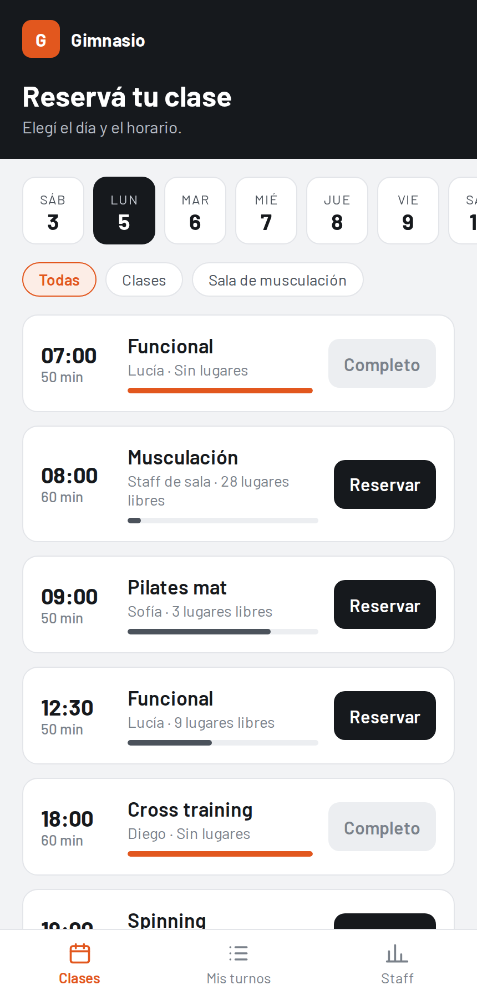
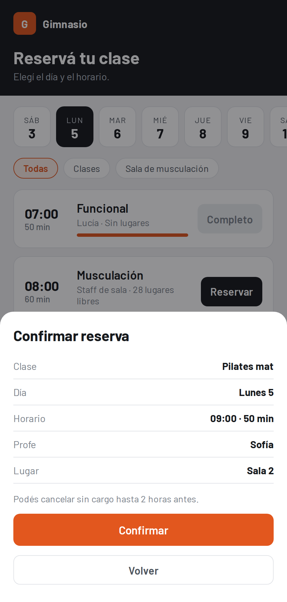
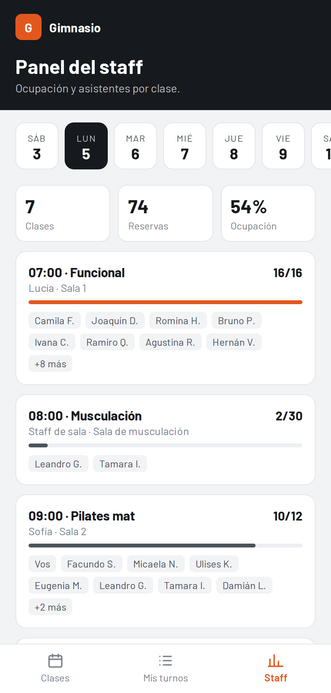

Turnero para gimnasio
Un sistema simple para que los socios reserven su lugar en cada clase desde el celular y el staff sepa de antemano cuánta gente va a venir.
- Clases de la semana con horario, profe y lugares libres a la vista.
- Reserva en dos toques y cancelación sin llamar al gimnasio.
- Control de cupos: cuando una clase se llena, deja de aceptar reservas.
- Panel del staff con ocupación del día y lista de asistentes por clase.
HTML, CSS y JavaScript, pensado primero para celular. La demo usa datos de ejemplo.
Probar la demo